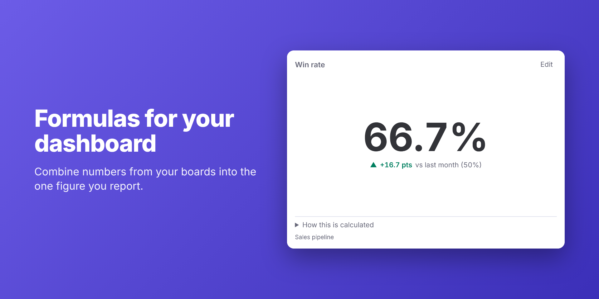

Formulas for your monday.com dashboards
monday.com dashboards show totals. Dashboard Math combines them into the figure you actually report: win rate, margin, budget used, average deal size, and this month against last.

What it does
- Name the numbers you need. Each is a sum, average, count, smallest, largest or median of a column, filtered by group, status or person.
- Type a formula such as
won / closed * 100. - Show the result as a number, percent or currency, compared with the previous month, quarter or year.
- Works with linked (mirror) columns, formula columns, time tracking and subitems.
- "How this is calculated" lists every number behind the result.
Private by design
Dashboard Math runs entirely inside your monday.com account. It has no server of its own and asks for one permission: read boards.
Support
Send us a support request. We reply within two working days.